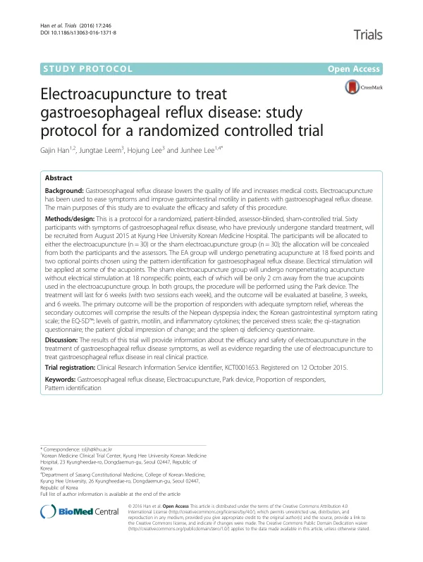

Electroacupuncture to treat gastroesophageal reflux disease: study protocol for a randomized controlled trial
Han G, Leem J, Lee H, Lee J
Trials 17(1):246

첫 장 · 오픈액세스First page · open access
논문 소개Summary
위식도역류질환에 전침을 놓는 무작위 대조시험의 프로토콜입니다. 표준치료인 양성자펌프억제제를 써도 환자의 20~30%는 증상이 남는데, 사람을 대상으로 샴 대조를 둔 전침 연구는 그때까지 없었습니다. 경희대학교한방병원에서 60명을 전침군과 샴군에 30명씩 나누어 주 2회씩 6주 동안 치료하고 시작 시점과 3주, 6주에 평가합니다. 전침군은 고정된 18개 혈에 변증으로 고른 2개를 더해 놓고, 샴군은 진짜 혈에서 2센티미터 떨어진 18개 자리에 파크 기기로 뚫지 않고 전류 없이 놓습니다. 일차 평가변수는 증상이 충분히 나아졌다고 답한 환자의 비율입니다. 프로토콜이라 결과는 없습니다.
A protocol for a randomised controlled trial of electroacupuncture in gastro-oesophageal reflux disease. Between 20% and 30% of patients remain symptomatic despite proton pump inhibitors, the standard treatment, and no sham-controlled trial of electroacupuncture in humans had been carried out. At Kyung Hee University Korean Medicine Hospital, 60 participants will be allocated 30 to each arm and treated twice weekly for six weeks, with assessment at baseline, three weeks and six weeks. The treatment group receives needling at 18 fixed points plus two chosen by pattern identification; the sham group receives non-penetrating needling with the Park device, without current, at 18 points located 2 cm from the true ones. The primary outcome is the proportion of responders reporting adequate symptom relief. As a protocol it reports no results.
인용Cite
Han G, Leem J, Lee H, Lee J. Electroacupuncture to treat gastroesophageal reflux disease: study protocol for a randomized controlled trial. Trials. 2016;17(1):246. doi:10.1186/s13063-016-1371-8